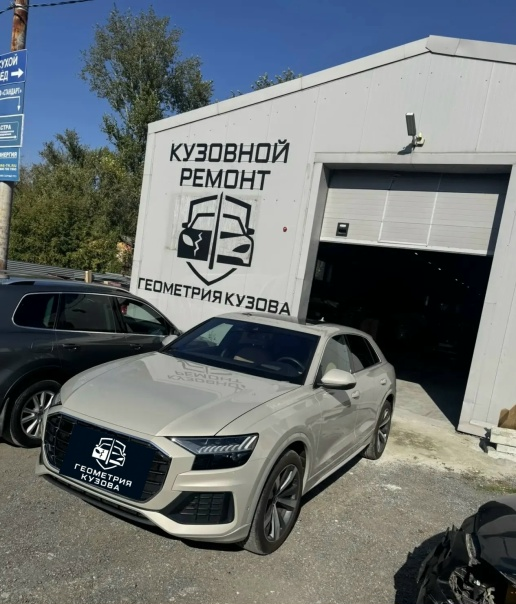

Паяем трещины, восстанавливаем крепления, красим в цвет кузова. Не всегда нужно покупать новый бампер — часто дешевле отремонтировать.
Фотографии из нашего цеха. Больше проектов — в галерее работ и в группе ВКонтакте.



Бампер — первая деталь, которая принимает удар при парковке, наезде на бордюр или небольшом ДТП. Трещины, разрывы креплений, сколы и потёртости — самый частый повод обратиться в кузовной цех. В «ГЕОМЕТРИИ КУЗОВА» на ул. Каслинской 1/1 мы ремонтируем бамперы и пластиковые элементы любой сложности: от точечной трещины до разорванного крепления после серьёзного удара. В большинстве случаев ремонт обходится в несколько раз дешевле покупки новой детали, при этом результат ничем не отличается от заводского.
Многие автовладельцы уверены, что треснувший бампер нужно сразу менять. На практике пайка и армирование восстанавливают деталь так, что она снова выдерживает эксплуатационные нагрузки. Ремонт целесообразен, если:
Если же пластик превратился в «пазл» из десятков кусков, крепления разрушены полностью, а сама деталь деформирована, мы честно скажем об этом и предложим замену — маскировать серьёзные разрушения не имеет смысла.
Работа всегда начинается с дефектовки. Мы снимаем деталь, оцениваем характер повреждений, проверяем состояние креплений и скрытых зон. Дальше — поэтапно:
Итоговая цена зависит от количества повреждений и типа пластика. Ориентируйтесь на наши базовые расценки — точную сумму назовём после осмотра:
| Работа | Цена |
|---|---|
| Пайка трещины бампера | от 1 000 ₽ |
| Восстановление крепления | от 1 000 ₽ |
| Ремонт и покраска бампера | от 12 000 ₽ |
| Локальная покраска участка | от 5 000 ₽ |
Срок работ — 1–2 дня. Если бампер снимается и требуется полная покраска, обычно планируйте 2–3 дня.
За плечами — более 10 лет работы и 700 м² оборудованного цеха. Мы используем профессиональные материалы для пластика, собственную лабораторию подбора краски и собственную камеру. За сезон через наш цех проходит больше 120 бамперов: мы ремонтировали бамперы Hyundai, Audi Q8, Renault Duster, Mazda 3, Toyota Camry, Mercedes — и по каждому проекту делаем фотоотчёт на этапах. На все работы даём гарантию.
Если бампер повреждён после ДТП, крепления вырваны, а пластик лопнул — не спешите заказывать новую деталь. Наш мастер бесплатно оценит повреждения и предложит вариант, который сохранит бюджет: приезжайте на дефектовку на ул. Каслинскую 1/1 или пришлите фото повреждения прямо на сайт — мы ответим с расчётом стоимости и сроков.
Звоните: +7 (922) 632-60-30 или +7 (351) 683-12-05. Работаем ежедневно с 10:00 до 20:00.
Записаться просто: позвоните по одному из телефонов, напишите в группу ВКонтакте или пришлите фотографии повреждения через форму на сайте. Мы посмотрим на снимки, назовём предварительную стоимость и предложим удобное время визита на ул. Каслинскую 1/1. Осмотр и дефектовка — бесплатные, а решение о ремонте вы принимаете уже после того, как узнаете точную сумму.
Присылаете фото повреждения — получаете предварительную оценку.
15 минутПроводим дефектовку, согласовываем работы и финальную стоимость.
30–60 минутВыполняем по этапам, отправляем фотоотчёт на связи.
1–2 дняПроверяете результат, подписываете акт, получаете гарантию.
30 минутПришлите фото повреждения — рассчитаем стоимость и сроки. Или позвоните: +7 (922) 632-60-30, +7 (351) 683-12-05.
Позвонить: +7 (922) 632-60-30 Оценить по фото